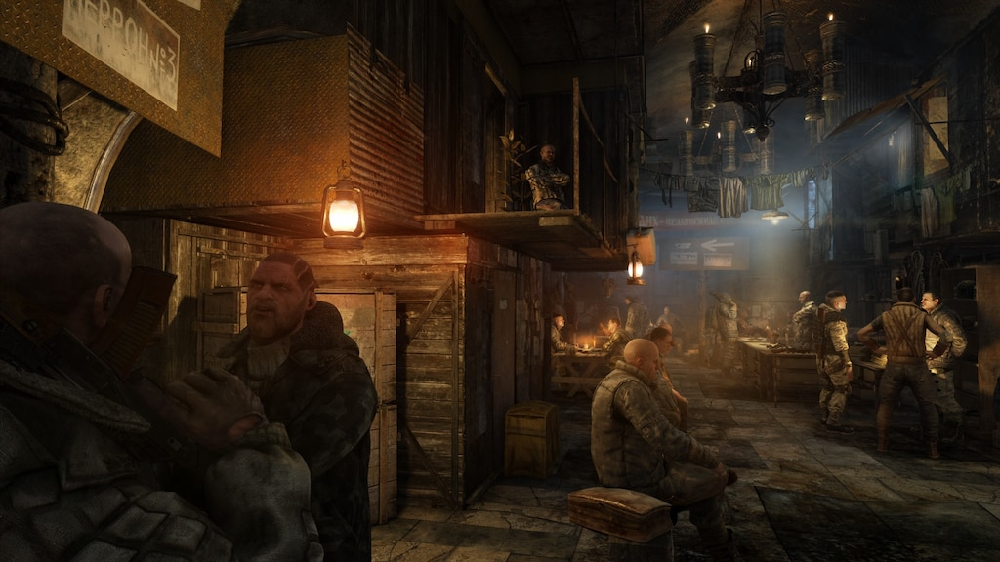

Esta es la historia de Aleksei Volkov, un personaje que vive en una de las ciudades subterráneas del metro. El se encuentra viviendo en la estación de Riga la cual no se caracteriza por ser una de las estaciones más seguras o con más recursos del metro. Sin embargo, Aleksei encuentra cierta tranquilidad en esta estación, hay algo que hace que, a pesar de todo lo que sucede en el metro, él se sienta en paz allí. Un día observa como un grupo de personas sale de la estación en busca de recursos, lo que no es algo inusual en el metro, pero lo que llama su atención es que estas personas no regresan a la estación. Aleksei se preocupa por ellos, ya que sabe que el metro puede ser un lugar peligroso, le informa a sus padres sobre lo sucedido, pero ellos le dicen que no se preocupe, que es normal que las personas salgan a buscar recursos y que a veces no regresan. Comienza a preguntar a otros habitantes de la estación sobre lo sucedido, pero nadie parece saber nada, lo que hace que Aleksei se sienta cada vez más preocupado, además, los rumores sobre una nueva amenaza que está asechando el metro comienzan a circular, lo que hace que la situación se vuelva aún más tensa.
La gente habla de una criatura similar a una sombra, que se mueve rápidamente por los túneles del metro, atacando a cualquier persona que se cruce en su camino; las personas dicen que aquellas personas que han tenido la mala suerte de encontrarse con esta criatura, se han vuelto totalmente locas antes de morir. Aleksei se siente cada vez más preocupado por la situación, y comienza a pensar en qué podría hacer para protegerse a sí mismo y a su familia de esta nueva amenaza. Sin embargo, también sabe que no puede quedarse en la estación para siempre, ya que los recursos son limitados y la situación podría empeorar en cualquier momento. Aleksei se encuentra en una encrucijada, debe decidir si quedarse en la estación y esperar a que las cosas mejoren, o salir a buscar recursos y enfrentar el peligro de la criatura que acecha el metro.